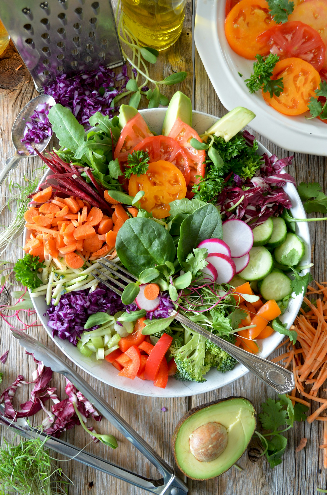

Let the harvest inspire the menu.
A little closer to the ground.Good things
THE IMAGINATION
OF AVALON
Good things
take root.
A fictional farm with a simple idea:
make the season the star of the table.
THE IMAGINATION
OF AVALON
Field study 001 / illustrative landscape
From field notes to fresh possibilities.01 / LAND & TABLE
More than
what's in
the box.
A good food story starts with paying attention. To the time of year. To the character of an ingredient. To all the small details in between.
Fewer steps between curiosity and cooking.
A box shaped by your own appetite.

The joy is in the varietyA colour.
A colour.
A texture.
A possibility.
A handful of greens becomes lunch. A few roots become supper. Our concept box builder turns choosing produce into a small, satisfying ritual.
Put something good together ↗The harvest / interactive conceptA box with
A box with
your name on it.
Choose a sample season and box size, then fill it with illustrated produce. Each item uses one space. All availability and prices are fictional.
The season names organise this fictional catalogue; they are not regional growing advice.